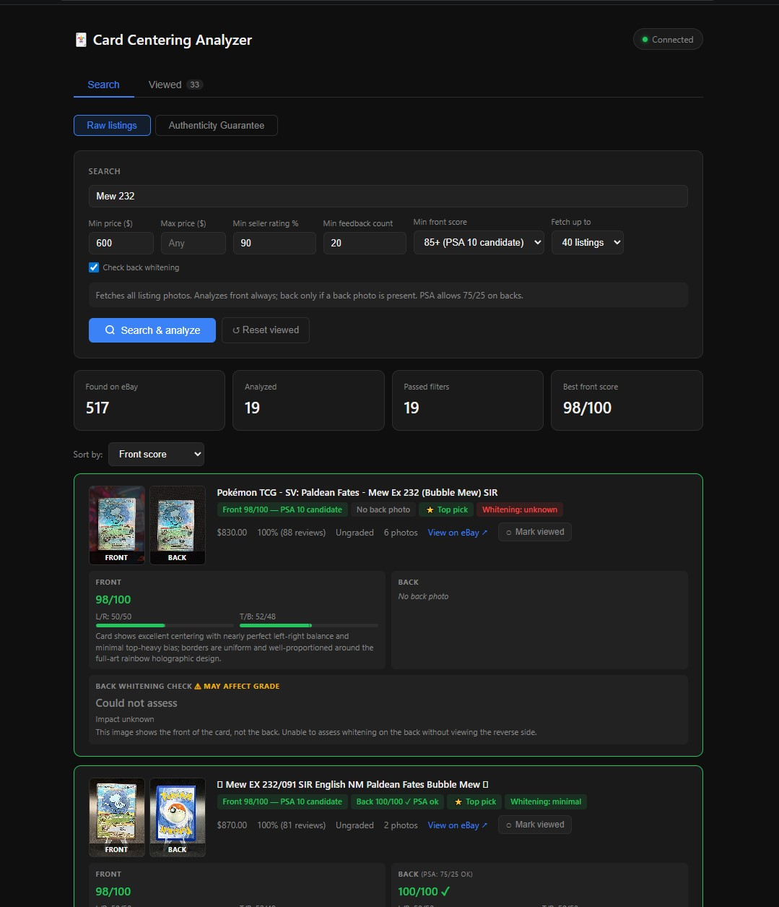
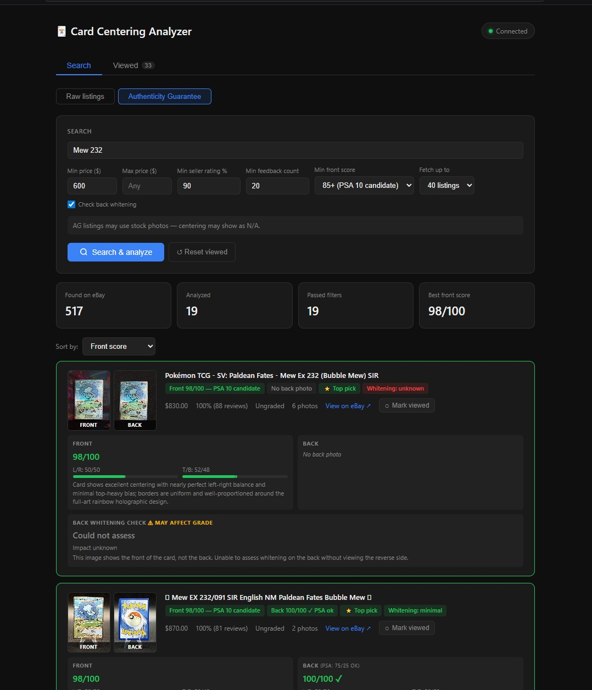
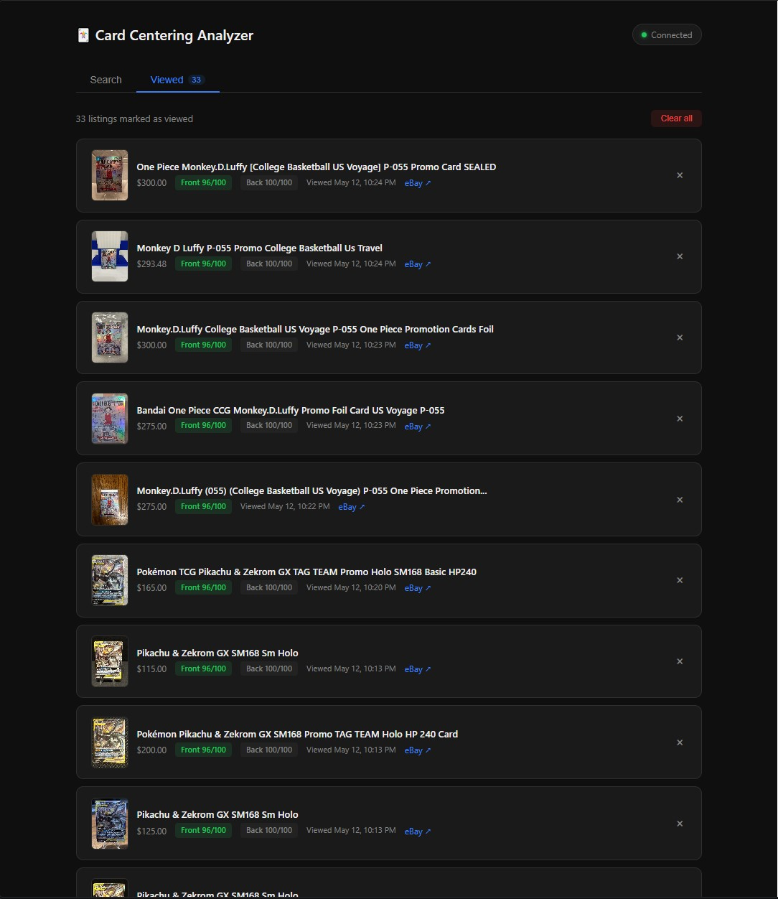

The problem
Getting a raw card professionally graded costs a submission fee per card, and centering is one of the biggest factors in whether a card lands a PSA 10 or a 9. Scanning through hundreds of eBay listings by eye to judge which raw cards are well-centered enough to be worth submitting is slow and error-prone.
This tool automates that triage: it pulls listings straight from eBay, scores each card's centering front and back, and surfaces the ones with real grade potential.
Search and analyze
You enter a card, set filters — price range, minimum seller rating and feedback, and a minimum centering score — and the tool fetches matching listings from eBay and analyzes every card it finds.

Two search modes
Raw listings covers ordinary seller photos. The Authenticity Guarantee mode narrows to eBay's verified listings — useful because those sometimes use stock photos, in which case the tool flags centering as not assessable rather than guessing.

Viewed tracking
When you're working through a lot of listings across several sessions, it's easy to lose track of what you've already checked. Marking a listing as viewed hides it from future runs so the tool only spends analysis on cards you haven't seen yet, and the list persists between sessions.

How it works
A Node/Express backend sits between the browser and two external services — the eBay Browse API and a vision model — and does the work that can't safely run in the browser.
The backend authenticates to the eBay Browse API with OAuth2 (caching the token until it expires) and runs the search with the user's filters.
For each listing it pulls the full-resolution photos, fetches them server-side, and converts them to base64 — which also keeps API keys off the client and sidesteps image CORS limits.
Each photo goes to a vision model (Claude) with a structured prompt that asks it to estimate the left/right and top/bottom border ratios, return a centering score, and describe what it sees, all as JSON.
The backend applies PSA-based scoring logic — including PSA's more lenient 75/25 allowance on card backs — plus an optional back-whitening check, then the frontend filters, sorts, and renders the results.
The visual judgment — reading the borders in a real, often imperfect eBay photo — is done by the vision model, not hand-written image processing. Real listing photos have glare, tilt, holo patterns, and slabs that break classic edge-detection; handing the image to a vision model absorbs that variability. The engineering here is the pipeline around it: the eBay integration, the image handling, the PSA scoring rules, and the interface.